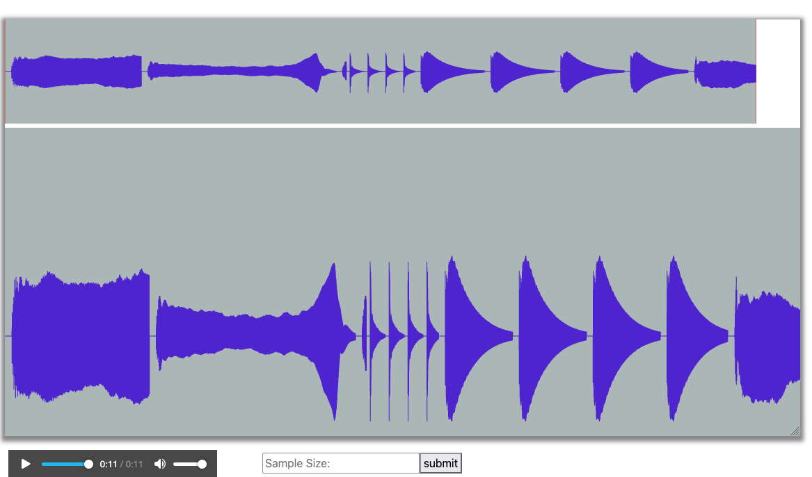

Create Musical Instruments and Play a Song
Goals
Students will create full classes of intruments that implement a given
interface. Students will use these instruments to create a AudioClip
that can be played as sound using BRIDGES.
Example Output of a Song (set of notes)

An example set of notes of Cello and Marimba
Description
Students will create and implement an Instrument interface. Each instrument
will have its own class and implement this interface. Each instrument will
store a set of notes for each instrument (with examples provided as wav files).
These notes will be used together (in sequence) to compose and demonstrate
a song.
Tasks
- Specify the Instrument interface
- Implement a class for each instrument using the interface
- Use the instrument class to load the notes for that instrument
- Implement a method to create a song audio clip with a sequence of
instrument notes and create the song's audio.
- Make the needed BRIDGES calls and pass the song audio clip to it
- Visualize the audio clip.
Help
For C++
AudioClip Documentation
For Java
AudioClip Documentation
For Python
AudioClip Documentation